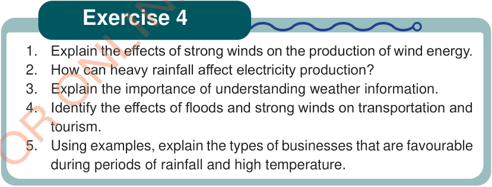

Exercise 4

1. Explain the effects of strong winds on the production of wind energy.
2. How can heavy rainfall affect electricity production?
3. Explain the importance of understanding weather information.
4. Identify the effects of floods and strong winds on transportation and tourism.
5. Using examples, explain the types of businesses that are favourable during periods of rainfall and high temperature.